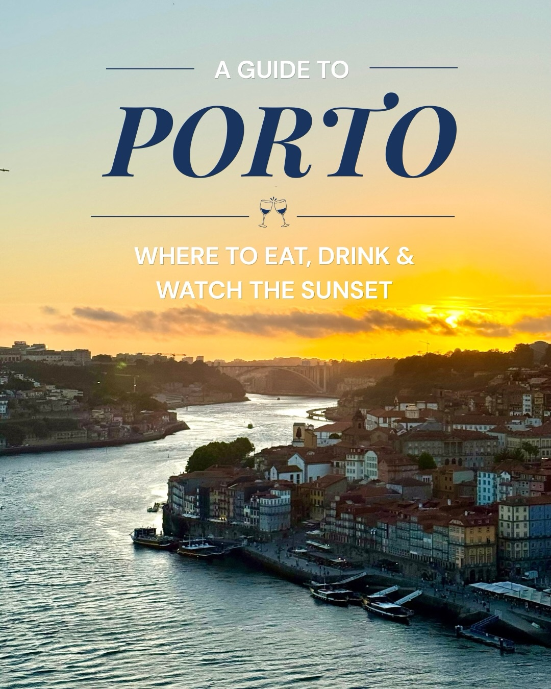
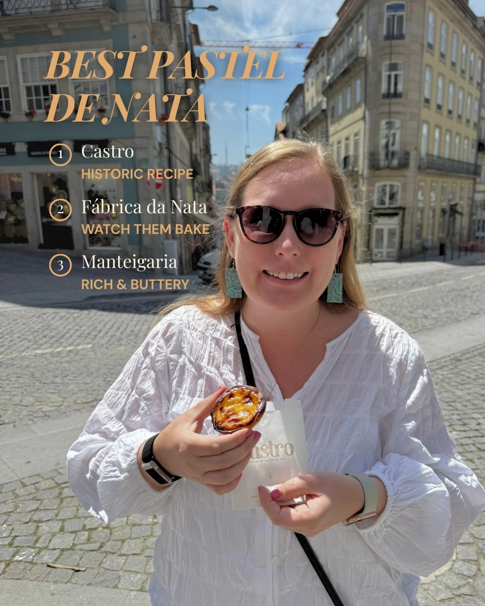
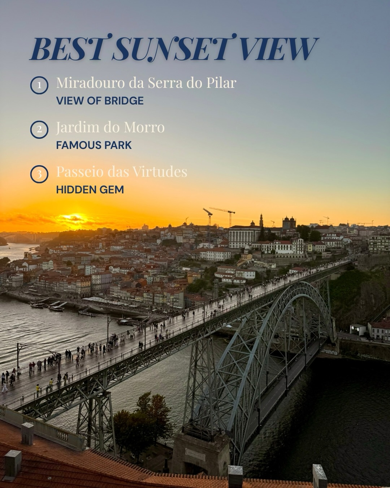
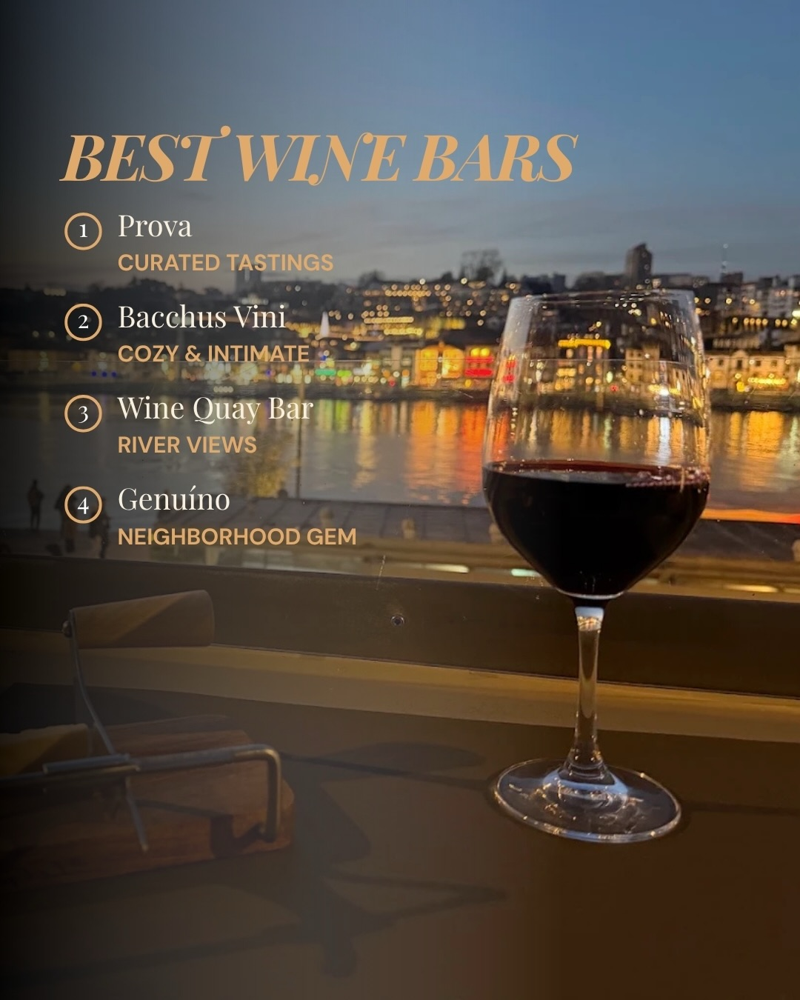
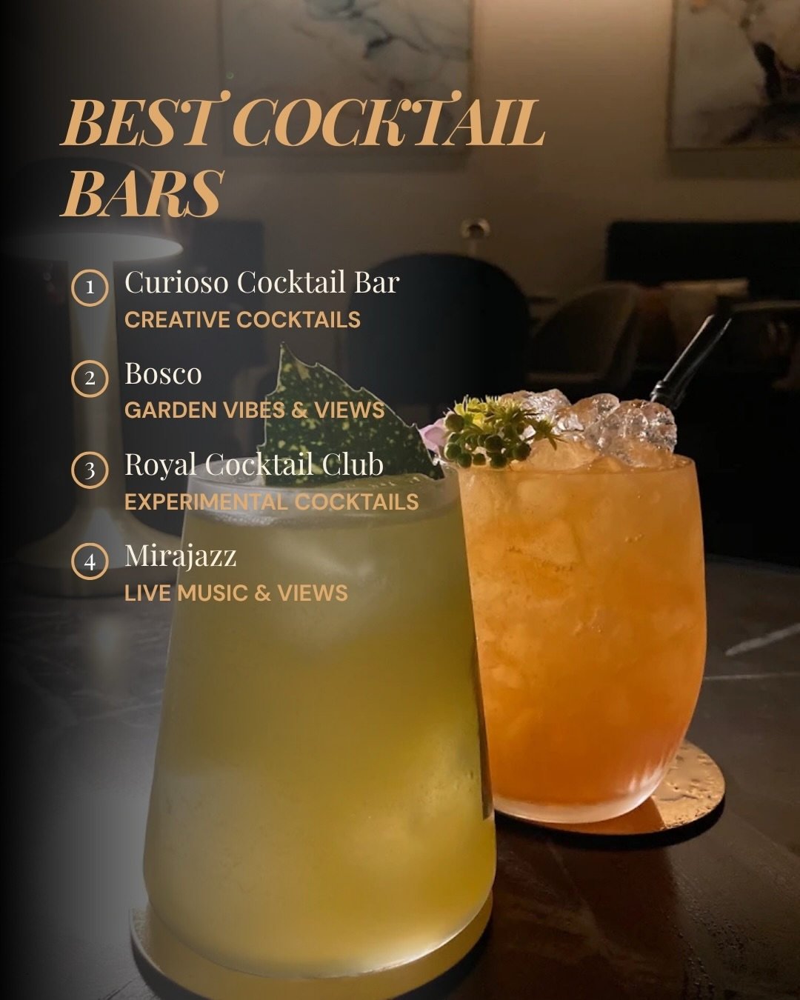

Instagram Post

Planning a trip to Porto?
carousel (8 slides) (enriched by ClaudeClaw)
Summary
BEST PASTEL DE NATA 1 Castro HISTORIC RECIPE 2 Fábrica da... | BEST SUNSET VIEW ① Miradouro da Serra do Pilar VIEW OF BR... | RUA DA BAINHARIA BEST RESTAURANTS ($$) 1 Orpheu Porto ALL... | BEST RESTAURANTS ($) ① Pedro Dos Frangos PIRI PIRI CHICKE... | BEST WINE BARS 1 Prova CURATED TASTINGS 2 Bacchus Vini CO... | BEST COCKTAIL BARS 1 Curioso Cocktail Bar CREATIVE COCKTA... | BEST COFFEE 1 C'alm...
Caption
Planning a trip to Porto?
Here’s my guide for the best:
🥮 pastel de nata
🌅 sunset view
🍽️ restaurants
🍷 wine bars
And more!
Save for your Porto trip and send to your travel partner ✨
#visitporto #portotravel #portugaltravel #portoportugal #portofood
1
A GUIDE TO PORTO WHERE TO EAT, DRINK & WATCH THE SUNSET
An aerial view of the city of Porto, Portugal, at sunset, showing the Douro River winding through the city with colorful buildings lining its banks and a bridge in the distance.
2
BEST PASTEL DE NATA 1 Castro HISTORIC RECIPE 2 Fábrica da Nata WATCH THEM BAKE 3 Manteigaria RICH & BUTTERY Castro
A smiling woman in sunglasses holds a pastel de nata and a "Castro" branded bag while standing on a cobblestone street with multi-story buildings in the background.
3
BEST SUNSET VIEW ① Miradouro da Serra do Pilar VIEW OF BRIDGE ② Jardim do Morro FAMOUS PARK ③ Passeio das Virtudes HIDDEN GEM
A panoramic view of a city at sunset, featuring a large double-deck metal arch bridge crowded with pedestrians over a river, with numerous buildings lining the riverbanks and hills in the background under an orange and yellow sky.
4
RUA DA BAINHARIA BEST RESTAURANTS ($$) 1 Orpheu Porto ALLEY DINING 2 OMA Restaurante SEASONAL MENU 3 tascö INVENTIVE PLATES FOLLOW & MENU & DRINKS www.omarestaurante.pt TAILS
A narrow street or alleyway is shown with old stone buildings, featuring an overlaid list of "BEST RESTAURANTS" and a street sign for "RUA DA BAINHARIA".
5
BEST RESTAURANTS ($) ① Pedro Dos Frangos PIRI PIRI CHICKEN ② Conga BIFANA PORK SANDWICH ③ Cervejaria Gazela FAMOUS HOT DOGS TAKE AWAY OBRIGADO PELA SUA VISITA 60 Desde 1961
A man stands with his back to the camera in front of a rotisserie oven with meat cooking, while a menu board and a list of "BEST RESTAURANTS" are visible in the background.
6
BEST WINE BARS 1 Prova CURATED TASTINGS 2 Bacchus Vini COZY & INTIMATE 3 Wine Quay Bar RIVER VIEWS 4 Genuíno NEIGHBORHOOD GEM
A glass of red wine sits on a dark surface in the foreground, with a blurred background showing a city skyline lit up along a river at dusk, and an overlay listing "BEST WINE BARS."
7
BEST COCKTAIL BARS 1 Curioso Cocktail Bar CREATIVE COCKTAILS 2 Bosco GARDEN VIBES & VIEWS 3 Royal Cocktail Club EXPERIMENTAL COCKTAILS 4 Mirajazz LIVE MUSIC & VIEWS
Two cocktails, one green and one orange, sit on a dark table in the foreground, with a blurred background showing an indoor bar or lounge setting, and an overlaid list titled "BEST COCKTAIL BARS".
8
BEST COFFEE 1 C'alma Coffee Room COFFEE FLIGHTS 2 SO Coffee Roasters MICRO-ROASTERS 3 Combi Coffee Roasters COFFEE & BRUNCH
Two hands hold two cups of latte art coffee, with a list of "BEST COFFEE" establishments overlaid on the image.
All slides



